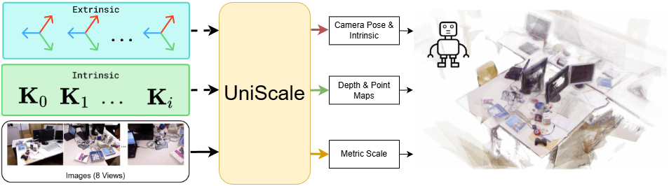
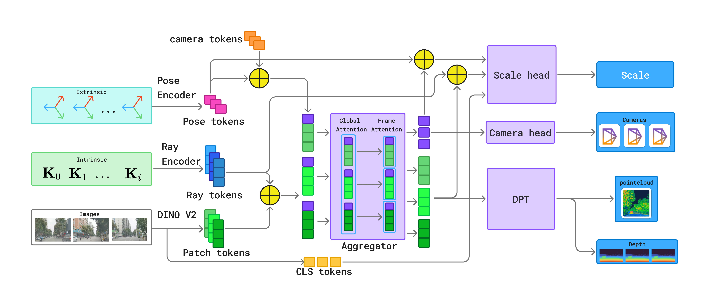
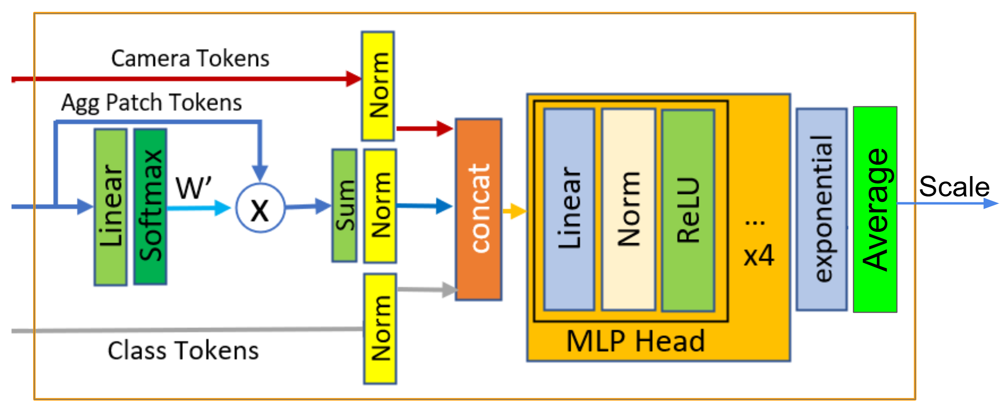
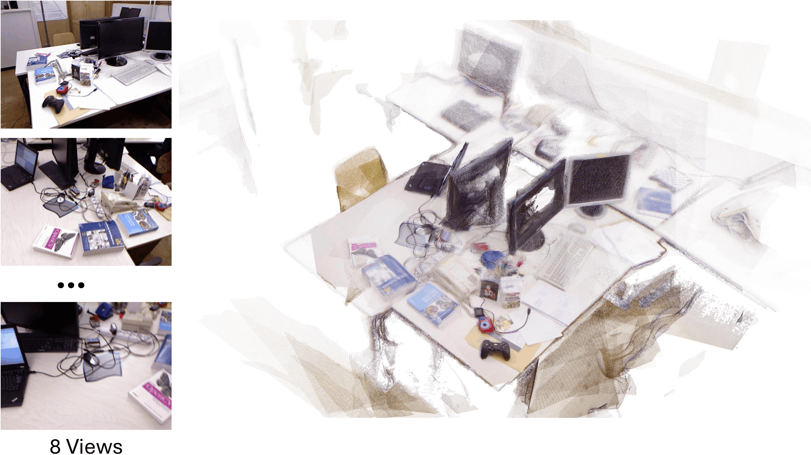
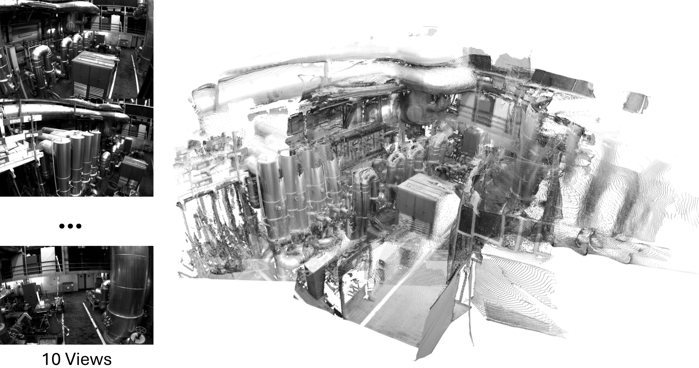
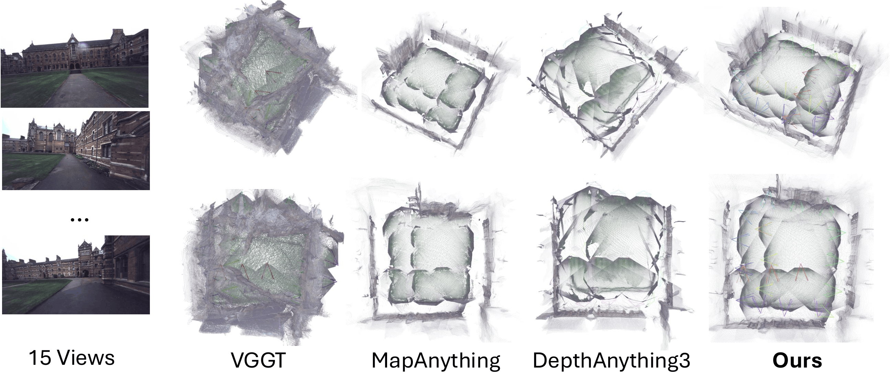
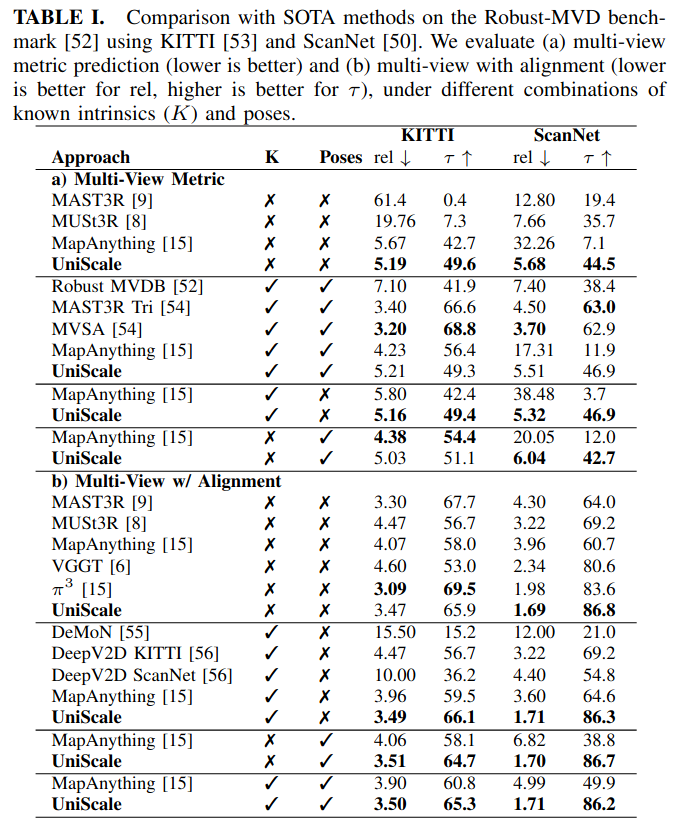
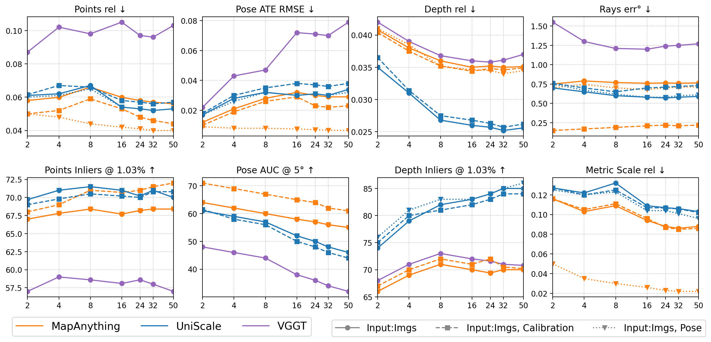

We present UniScale, a unified, scale-aware multi-view 3D reconstruction framework for robotic applications that flexibly integrates geometric priors through a modular, semantically informed design. In vision-based robotic navigation, the accurate extraction of environmental structure from raw image sequences is critical for downstream tasks. UniScale addresses this challenge with a single feed-forward network that jointly estimates camera intrinsics and extrinsics, scale-invariant depth and point maps, and the metric scale of a scene from multi-view images, while optionally incorporating auxiliary geometric priors when available. By combining global contextual reasoning with camera-aware feature representations, UniScale is able to recover the metric-scale of the scene. In robotic settings where camera intrinsics are known, they can be easily incorporated to improve performance, with additional gains obtained when camera poses are also available. This co-design enables robust, metric-aware 3D reconstruction within a single unified model. Importantly, UniScale does not require training from scratch, and leverages world priors exhibited in pre-existing models without geometric encoding strategies, making it particularly suitable for resource-constrained robotic teams. We evaluate UniScale on multiple benchmarks, demonstrating strong generalization and consistent performance across diverse environments. We will release our implementation upon acceptance.

Overview of the UniScale framework.

Modular metric-scale head design.

Results on TUM dataset.

Results on EuRoC dataset.

Qualitative comparison on the Oxford dataset.


Dense N-view reconstruction results.
If you find this work useful for your research, please cite:
@article{mahdavian2026uniscale,
title={UniScale: Unified scale-aware 3D reconstruction for multi-view understanding via prior injection for robotic perception},
author={Mahdavian, Mohammad and Tan, Gordon and Xu, Binbin and Ren, Yuan and Bai, Dongfeng and Liu, Bingbing},
journal={arXiv preprint arXiv:2602.23224},
year={2026}
}